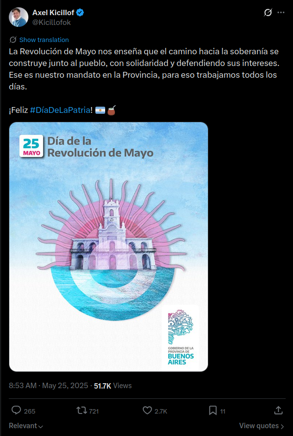
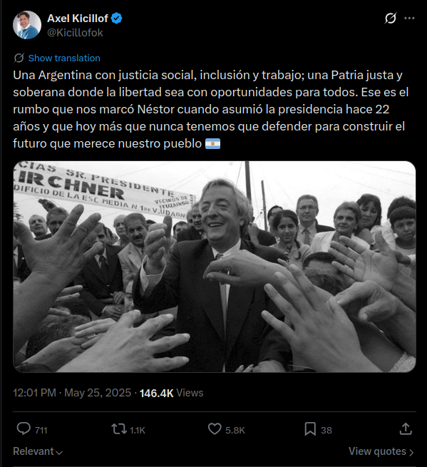
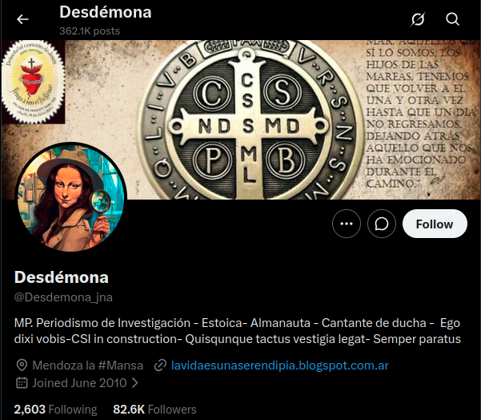
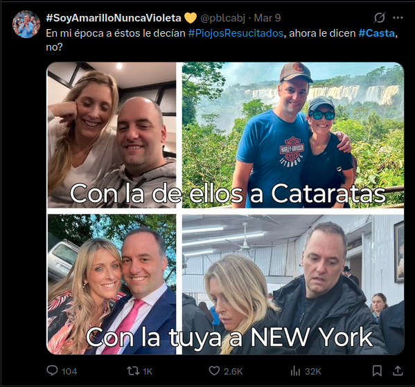

Discurso digital: Slimovich + Paveau
Lectura del cronograma: De la imagen analógica al discurso digital (2026): III.2 Paveau sin memoria tecnodiscursiva y III.5 Slimovich.
I. El discurso político digital (Slimovich)
La política contemporánea funciona dentro de un entramado mediático. Tanto en la producción de los discursos como en su recepción, los modos de hacer política pasan hoy por los medios masivos y por las redes sociales. Ana Slimovich (2022) estudia, desde ahí, cómo la irrupción de las redes reconfiguró el proceso democrático argentino de la última década, y distingue dos usos articulados: 1) el uso de las redes por parte de los líderes políticos y 2) el de la ciudadanía, que producen formas de discurso diferentes.
El rasgo decisivo de ese pasaje (la reconfiguración de los procesos políticos a causa de la irrupción de las redes sociales) es lo que la autora llama desintermediación. En la televisión son los periodistas quienes reciben a los políticos y a sus discursos dentro de sus espacios; en las redes, la interfaz informativa se desintegra en los perfiles y se arma un vínculo directo entre el candidato y el internauta ciudadano. Ahí, el discurso político convive con muchas otras voces: las de los medios tradicionales, las de otros políticos, las de las instituciones y las de los propios usuarios. Así, las redes expanden el lugar, los modos y las voces de lo político, y a la vez los fragmentan y los dispersan.
Esta reconfiguración amplía la esfera pública. Se suman nuevos enunciadores y nuevos puntos de vista, y se incorpora un público que antes permanecía al margen de las campañas centradas en los medios masivos. De ahí la noción de ciudadano digital, aquel que ejerce a través de internet al menos una parte de sus derechos de participación, deliberación y vigilancia sobre los gobernantes. Las nociones de ciberdemocracia, democracia digital y democracia electrónica nombran ese horizonte en el que el uso de los medios basados en internet reordena la participación y los flujos de información entre representantes y representados.
Sobre el alcance de todo esto, conviven lecturas opuestas. Las miradas críticas sospechan de eventos ficticios, discursos meramente fáticos, simulacros sostenidos con trolls y bots, y de una participación débil y fugaz que dejaría intacto el statu quo. Las miradas optimistas imaginan una democracia ultra participativa, con diálogo directo y sin intermediaciones entre ciudadanos y líderes.
En el plano del lenguaje, Beatriz Sarlo (2011) ve en los enunciados de Twitter una especie de vaciamiento argumentativo, donde la imagen y la persuasión del sujeto desplazan la argumentación. La cátedra adopta la hipótesis de Slimovich, para quien los discursos políticos en las redes combinan lo pasional y lo racional, y abren nuevos vínculos entre los ciudadanos y entre representantes y representados.
El análisis de las formas concretas que el discurso político asume en línea requiere herramientas para describir el tuit, el hashtag y el hilo. Los apartados siguientes desarrollan ese instrumental a partir del trabajo de Marie-Anne Paveau.
II. Paveau y el discurso digital nativo
El concepto central que propone Paveau es el de discurso digital nativo, esto es, el conjunto de producciones verbales elaboradas en línea, sea cual sea el dispositivo, la interfaz o la plataforma de escritura. La novedad de la categoría reside en algo más profundo que el soporte. En los entornos digitales, el lenguaje y la tecnología informática se vuelven indiscernibles. El texto y la técnica se coproducen desde el origen como componentes inseparables del discurso digital nativo.
Para designar este fenómeno, Paveau acuña el concepto de tecnolingüístico, que nombra lo que resulta de esa fusión entre la dimensión lingüística y la dimensión tecnológica en una sola forma. El hashtag es su ejemplo más visible, y lo acompañan los hipervínculos, las @menciones, los botones de compartir y los algoritmos que ordenan qué se ve y cuándo.
Rasgos definitorios
Paveau identifica un conjunto de propiedades que distinguen el discurso digital nativo del discurso predigital:
Composición tecnolingüística. Los discursos digitales nativos están hechos de una materia mixta que entrelaza lenguaje y tecnología informática. La composición tecnolingüística puede ser manifiesta, como en el hashtag, donde el símbolo # forma parte del signo, o quedar inscripta en operaciones menos visibles, como los algoritmos que formatean la circulación.
Hibridez semiótica. Los tecnodiscursos suelen movilizar al mismo tiempo texto, imagen fija o animada y sonido. Rara vez son monomodales.
Deslinealización. El hilo del discurso puede cortarse en cualquier momento mediante vínculos hipertextuales que abren otra ventana, otro contexto, y por eso, otra situación de enunciación. La lectura en línea avanza por saltos.
Enunciación aumentada. La web social amplía quién habla y de qué manera. Los blogs admiten comentarios, los documentos colaborativos reúnen varios autores en un solo enunciado y un tuit puede ser retransmitido y multiplicar así a su enunciador original.
Relacionalidad. Todo discurso digital nativo está inscripto en relaciones: con otros discursos (por el carácter de red de la web), con los dispositivos (porque la máquina co-produce el enunciado) y con los escritores y (escri)lectores. La configuración de la interfaz condiciona esa doble función y habilita determinados modos de leer y escribir.
Investigabilidad. Los discursos digitales nativos pueden ser buscados, encontrados, reunidos y reutilizados gracias a metadatos internos inscriptos en el código.
Imprevisibilidad. Una parte del discurso es producida o formateada por programas y algoritmos, de modo que la forma y el alcance de los enunciados exceden parcialmente el control humano.
Estas propiedades permiten precisar el concepto de tecnodiscurso. Con ese término, Paveau designa toda producción discursiva digital nativa en la que lo lingüístico y lo tecnológico resultan inseparables. Analizar un tecnodiscurso supone atender, a la vez, lo que se dice y las condiciones técnicas que configuran esa forma de producción discursiva.
El hashtag
Siguiendo a Paveau, el hashtag es el ejemplo paradigmático de forma tecnolingüística. Se trata de un segmento lingüístico precedido por el símbolo #, creado en Twitter en 2007 y extendido luego a otras plataformas. Su definición reúne de modo indisociable la dimensión lingüística y la técnica.
Desde el punto de vista lingüístico, el hashtag puede ser una sigla, una palabra, una expresión o una frase entera. Desde el punto de vista técnico, es un enlace cliqueable que genera un hilo y permite buscar el conjunto de enunciados que lo contienen. Separar ambas dimensiones equivale a destruir el objeto.
Funciones del hashtag
a. Marcación y búsqueda
La función más básica del hashtag consiste en volver investigable el discurso. Al hacer clic sobre un hashtag se accede a un hilo que reúne todos los enunciados que lo contienen. Esa posibilidad modifica la estructura misma del discurso, que pasa a ser, además de un enunciado dirigido a destinatarios específicos, un fragmento de una conversación pública y recuperable.
b. Afiliación difusa
El hashtag arma canales abiertos de pertenencia. Paveau habla de afiliación difusa para nombrar ese tipo de vínculo débil, caracterizado por una pertenencia abierta. El uso de un hashtag declara un posicionamiento y puede reunir personas con motivaciones y supuestos parcialmente diferentes. En el contexto político argentino, un mismo hashtag puede articular esa afiliación entre usuarios sin relación previa entre sí.
c. Emoción y modalización
Los hashtags pueden funcionar como comentarios metadiscursivos sobre el propio enunciado. Agregar #ironía o #escándalo al final de un tuit funciona como una instrucción de lectura sobre lo que se acaba de decir y orienta su interpretación. Esta función modalizadora resulta interesante porque traslada al plano técnico algo que en el discurso oral correría por cuenta de la entonación.
d. Argumentación y palabras-argumento
A partir del trabajo de Anne-Charlotte Husson, Paveau señala que los hashtags militantes funcionan como palabras-argumento, capaces de condensar posicionamientos ideológicos, activar prediscursos y construir identidades enunciativas. Un hashtag como #NiUnaMenos toma partido, convoca y categoriza. Su densidad argumentativa resulta inseparable de su circulación técnica.
e. Polémicas y batallas de hashtags
Un fenómeno propio de la cultura digital es la batalla de hashtags. A partir de un hashtag lanzado por un sector, otros usuarios producen contrahashtags, parodias o resignificaciones. La dinámica es tecnodiscursiva en sentido pleno, porque la misma plataforma que permite lanzar el hashtag habilita su contestación con las mismas herramientas.
El hashtag es, en síntesis, una tecnopalabra, un segmento que reúne en simultáneo propiedades lingüísticas, semánticas, pragmáticas y argumentativas, y también propiedades técnicas, dado que es cliqueable, genera un hilo y resulta investigable. El análisis integra simultáneamente sus propiedades lingüísticas y técnicas.
El tuit
El tuit es el enunciado básico de X / Twitter, un enunciado polisemiótico complejo, fuertemente contextualizado y no modificable, producido de forma nativa en la plataforma. Su carácter polisemiótico significa que combina texto, imágenes, gifs, videos, tecnopalabras y metadatos cuantitativos, como las impresiones, las interacciones y los me gusta. Su carácter no modificable significa que, una vez publicado, solo puede eliminarse y ya no corregirse.
Advertencia metodológica: el tuit excede el texto corto y sus dimensiones dependen del recorte analítico adoptado.
Dos formas del tuit
Forma estereotipada. Es la que aparece en las líneas de tiempo y la que reproducen la prensa o la televisión cuando citan un tuit, con el avatar, el nombre de usuario, el texto, la fecha y los íconos de acción. Es la forma más visible y, a la vez, la más parcial.
Forma ecológica. Al hacer clic sobre el tuit se abre una vista vertical que incluye las respuestas, el número de retuits, los avatares de quienes interactuaron y la posibilidad de responder. Es la forma completa del tuit como objeto social.
La distinción permite establecer el alcance del recorte analítico. La forma ecológica incorpora relaciones, respuestas y metadatos que amplían la información disponible en la forma estereotipada.
El hilo como unidad ampliada
Los tuiteros encontraron siempre maneras de superar el límite de caracteres encadenando mensajes. Desde 2014 la plataforma formalizó esa práctica con la función de hilo. En esos casos, la unidad pertinente de análisis puede ser el hilo completo, que llega a funcionar como un ensayo breve, una denuncia desarrollada o una narración.
La tipología de Paveau distingue al menos cuatro formas de tuit según su función tecnodiscursiva: 1) el tuit propiamente dicho, simple o compuesto, 2) la respuesta, 3) el retuit, con o sin comentario y 4) el hilo. Cada una supone una relación enunciativa distinta y un grado diferente de apropiación del discurso ajeno.
III. Guía metodológica para el análisis del discurso digital
El análisis semiótico de un tecnodiscurso sigue una secuencia que parte de la descripción material y avanza hacia la interpretación. La secuencia comprende los siguientes pasos:
Identificar la plataforma y el dispositivo. ¿En qué entorno fue producido el enunciado? Las condiciones técnicas de cada plataforma, como el límite de caracteres, la posibilidad de armar hilos o el algoritmo de visibilidad, forman parte del enunciado.
Describir la composición semiótica. ¿Qué elementos están presentes, texto, imagen, hashtags, @menciones, hipervínculos, emojis, gifs? ¿Cómo se articulan entre sí?
Analizar las tecnopalabras. Identificar los hashtags y/o las @menciones. Para cada hashtag, determinar qué función cumple -marcación, afiliación, modalización o argumentación-, si genera un hilo y a qué conversación o batalla más amplia pertenece.
Examinar la enunciación. ¿Quién habla? ¿A quién? ¿Se trata de un tuit directo, una respuesta, un retuit con comentario y/o una pieza de un hilo? La posición enunciativa cambia el sentido.
Considerar la imprevisibilidad y la investigabilidad. ¿Qué partes del discurso fueron producidas o formateadas algorítmicamente? ¿Qué rastros dejó el enunciado en la plataforma, como retuits, respuestas o tendencias?
Interpretar el posicionamiento. ¿Qué prediscursos activa el enunciado? ¿Qué lugar ocupa en una conversación o batalla más amplia? ¿Qué construye o refuerza en términos de identidad, comunidad o argumento?
IV. Ejemplo de análisis
El ejemplo que sigue toma como objeto un tuit real, publicado el 25 de mayo de 2025 a las 8:53 AM por el gobernador bonaerense Axel Kicillof desde su cuenta @Kicillofok, después de participar del Tedeum por el aniversario de la Revolución de Mayo en la Catedral de La Plata.

Paso 1. Plataforma y dispositivo
El enunciado fue producido en X desde la cuenta de un gobernador en ejercicio, verificada y con seguimiento masivo. La plataforma impone condiciones que el tuit aprovecha. El límite de caracteres fuerza la condensación de la consigna, el algoritmo favorece la circulación de los contenidos vinculados a una efeméride que ese día concentra la conversación, y la investidura del enunciador otorga una visibilidad diferencial. El carácter no modificable del posteo hace que toda corrección posterior solo pueda pasar por su eliminación.
Paso 2. Composición semiótica
El enunciado es polisemiótico y articula cuatro capas. Hay un texto verbal de registro celebratorio y doctrinario, organizado alrededor de la idea de soberanía y de pueblo. Hay una tecnopalabra, el hashtag #DíaDeLaPatria, que cierra el mensaje como saludo. Hay dos emojis, una bandera argentina y un mate, que aportan una marca afectiva de argentinidad. Y hay una imagen institucional, una placa del Gobierno de la Provincia de Buenos Aires con la leyenda del 25 de mayo, una ilustración del Cabildo sobre un sol naciente y el río, y el logotipo provincial. Esa imagen ancla el enunciado en el aparato estatal y refuerza visualmente lo que el texto enuncia, de modo que la carga significante se reparte entre lo verbal, lo tecnolingüístico, los emojis y lo institucional-visual. La presencia de la placa confirma una advertencia metodológica de Paveau, ya que un análisis que se quedara solo con el texto perdería la mitad del enunciado.
Paso 3. Análisis de tecnopalabras
#DíaDeLaPatria funciona, ante todo, como marcación temática de efeméride. Inscribe el tuit en el flujo masivo de mensajes que ese 25 de mayo emplean la misma etiqueta y lo vuelve investigable dentro de esa conversación. Su densidad argumentativa es baja por la escasa condensación de una categorización polémica, y ese rasgo constituye un dato de análisis. La etiqueta opera principalmente como afiliación difusa a una comunidad de celebración patria. La carga de posicionamiento se concentra en el cuerpo verbal del tuit, donde aparecen los operadores ideológicos fuertes (soberanía, pueblo, mandato en la Provincia), y en la imagen, que añade la firma del Estado provincial. Los dos emojis podrían leerse también como tecnopalabras, signos nativos de la plataforma que fijan el tono nacional y popular del enunciado.
Paso 4. Enunciación
El enunciador combina una posición institucional (la del gobernador) con una marca personal de liderazgo, y la placa provincial añade una tercera voz, la del aparato estatal que respalda el saludo. El destinatario construido es difuso, una audiencia amplia de la que el “pueblo” del texto es la figura idealizada, sin interlocutor identificado. Esa amplitud confirma la observación de Page (en Paveau) sobre la analogía entre el tuit y el discurso mediático. El texto afirma, celebra y define un mandato, con una enunciación asertiva y de fuerte modalización apreciativa y valorativa.
Paso 5. Imprevisibilidad e investigabilidad
Las métricas públicas del posteo, unas 51,7 mil visualizaciones, 721 retuits, 2,7 mil me gusta y 265 respuestas (para el día 19 de junio de 2026), son ellas mismas datos cuantitativos nativos que forman parte del enunciado en su forma ecológica y permiten medir su circulación. La etiqueta #DíaDeLaPatria fue usada el mismo día por enunciadores de distintos sectores del arco político y por miles de usuarios anónimos, de modo que el hashtag elegido por Kicillof circula mezclado con saludos oficialistas, de algunos opositores y comerciales. La circulación excede el control del enunciador y ejemplifica la imprevisibilidad del discurso digital nativo. La investigabilidad permite, además, reconstruir la secuencia, porque ese mismo día Kicillof encadenó un segundo posteo dedicado al aniversario de la asunción de Néstor Kirchner, de manera que ambos tuits funcionan como un hilo que orienta la lectura del primero hacia la memoria peronista.

Paso 6. Posicionamiento
El tuit construye una escena enunciativa en la que el gobernador se ubica como portavoz de un pueblo soberano y vincula la fecha patria con su gestión provincial. El texto aporta el contenido ideológico, la imagen aporta el sello del Estado bonaerense, el hashtag aporta la inscripción en la efeméride y los emojis aportan la afectividad e identidad nacional. La combinación es una estrategia tecnodiscursiva eficiente, porque con pocas líneas, una placa, una etiqueta y dos emojis se declara una pertenencia, se activa una memoria política y se ingresa a una conversación masiva del día.
V. Ejercicios
Ejercicio 1. Análisis de tuits
Leer los siguientes dos tuits y responder las consignas:
Describir la plataforma (X) y las condiciones técnicas relevantes.
Describir la composición semiótica del tuit, con los elementos presentes y su articulación.
¿Cuántas tecnopalabras pueden identificarse en el tuit y cuáles son?
¿Qué función cumple cada hashtag, ya sea de marcación, afiliación, modalización o argumentación? Justificar con el texto.
¿Quién produce el enunciado? ¿Qué tipo de perfil tiene el usuario?
¿A quién va dirigido el enunciado? ¿Es posible reconocer un destinatario preciso o una audiencia difusa?
¿Qué elementos de la composición semiótica podrían describirse al observar este tuit en su forma “ecológica”, con respuestas y retuits? ¿Cambiaría el análisis?
Realizar una interpretación del posicionamiento discursivo general de cada tuit.
1)
@Desdemona_jna · Mar 14 Lloran x q se difunde lo de #Libra y lo de @madorni, aclaro, si no hubiesen hecho campaña orinando agua bendita , prometiendo q elcosto lo pagaría la #Casta, q se iba a terminar todo lo q los.k implementaron, nadie diría nada. Son esclavos de sus palabras. |

2)

Ejercicio 2. Batalla de hashtags
Durante el debate parlamentario sobre la Ley Bases en 2024 circularon simultáneamente en X los hashtags #LeyBases y #NoALaLeyBases, utilizados por actores políticos, organizaciones sociales, medios y usuarios comunes para expresar posiciones opuestas respecto del proyecto impulsado por el gobierno de Javier Milei.
Rastrear esos hashtags en X. Nota: es posible buscar tuits con esos hashtags usando la búsqueda avanzada de la plataforma.
Describir la dinámica de batalla de hashtags que se produce en ese escenario.
¿Qué tiene de específico este fenómeno respecto de otros tipos de polémica discursiva, como una carta de lectores o un debate parlamentario televisado? Usar los conceptos de Paveau para responder.
¿Qué rol juega la investigabilidad en esta dinámica?
Identificar qué funciones cumplen los hashtags #LeyBases y #NoALaLeyBases. Determinar si funcionan como marcadores temáticos, formas de afiliación o palabras-argumento. Justificar la respuesta.
Explicar cómo la circulación, las respuestas y las reapropiaciones de los hashtags muestran la imprevisibilidad propia de los tecnodiscursos nativos.
VI. Glosario
| Término | Definición |
| Mediatización de lo político | Proceso por el cual los modos de hacer política se realizan a través de los medios masivos y de las redes sociales, tanto en la producción como en la recepción de los discursos. |
| Desintermediación | Proceso propio de las redes sociales por el cual la interfaz informativa se desintegra en los perfiles de los políticos y se configura un vínculo directo entre el candidato y el internauta ciudadano. |
| Ciudadano digital | Aquel que ejerce al menos una parte de sus derechos de participación, deliberación y vigilancia a través de internet, integre o no una comunidad virtual. |
| Palabra-argumento | Categoría propuesta por Husson para los hashtags militantes que condensan posicionamientos ideológicos y activan prediscursos argumentativos. |
| Discurso digital nativo | Conjunto de producciones verbales elaboradas en línea, cuya especificidad reside en la fusión indisoluble entre el lenguaje y la tecnología informática. |
| Tecnolingüístico | Adjetivo que designa lo que resulta de la coproducción entre la dimensión lingüística y la dimensión tecnológica en los entornos digitales. |
| Tecnopalabra | Segmento lingüístico que posee en simultáneo propiedades lingüísticas y propiedades técnicas, ya que es cliqueable, genera un hilo y resulta investigable. El hashtag y la @mención son sus ejemplos prototípicos. |
| Hashtag | Segmento precedido por el símbolo # que funciona como enlace, generador de hilos y marcador de afiliación, tema o posicionamiento. |
| Afiliación difusa | Pertenencia débil y abierta que el hashtag genera entre los usuarios que lo emplean, sin vínculo formal ni membresía explícita. |
| Investigabilidad | Propiedad de los discursos digitales nativos que permite buscarlos, encontrarlos y reunirlos gracias a la inscripción de metadatos internos. |
| Imprevisibilidad | Propiedad que resulta de la participación de los algoritmos en la producción y la distribución del discurso, por la cual la forma y el recorrido del enunciado exceden parcialmente el control del enunciador. |
| Enunciación aumentada | Ampliación de las posibilidades enunciativas que ofrecen los entornos digitales, con comentarios, escritura colaborativa y ubicuidad del enunciador. |
| Deslinealización | Ruptura del hilo discursivo por efecto de los vínculos hipertextuales, que dirigen al lector hacia otros textos y otras situaciones de enunciación. |